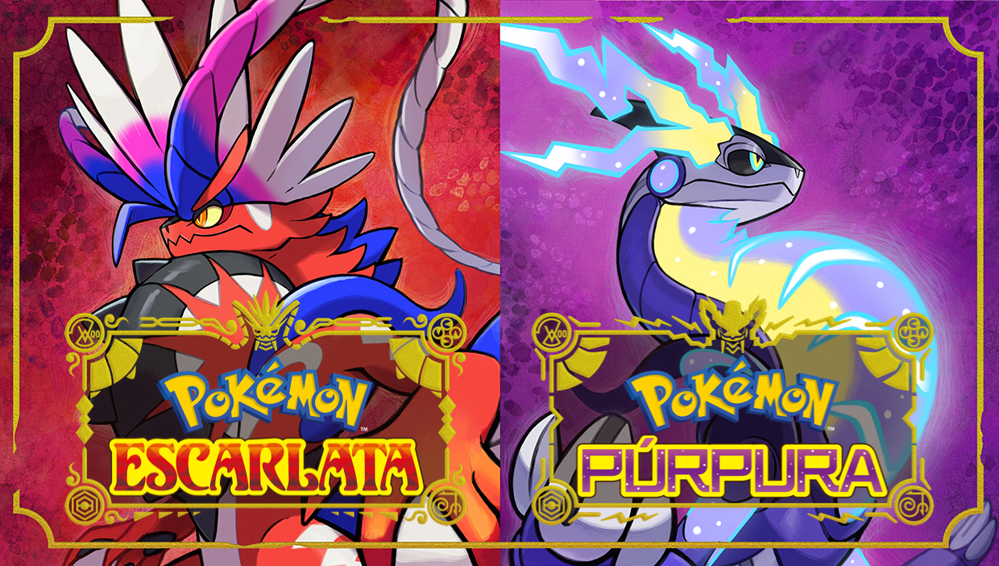

library_music Kaelan Mikla - De Islandia para el mundo
Kælan Mikla es declarada una de las bandas actuales favoritas del mismo Robert Smith. Menudo orgullo no es para cuestionarse al haber sido invitadas al festival Meltdown, organizado por The Cure, con un cartel que incluía bandas del calibre de Interpol, Slowdive y RIDE, entre otros.
Sólveig Matthildur, Margrét Rósa y Laufey Soffía conforman un trío de tendencia dark wave, post punk y synth wave, lo cual ha de haber sido lo que hiciera que le brillaran los ojos a Robert Smith. Normalmente Laufey es quien lleva la dirección en la voz, pero en algunas canciones se alterna. Las letras van sobre una poesía ensombrecida de ‘Næturblóm’; unas líneas obscurecidas que son exaltadas en potentes gritos como en ‘Kalt’; el intercambio y alternancia vocal entre Laufey y Sólveig, mientras esta última puntea una línea en el bajo a la que ocasionalmente matiza con modulación de chorus, como en ‘Nornalagið’.
Las secuencias rítmicas y progresiones melódicas son uno de los cambios más trascendentales en las composiciones del trío, pues antes contaban con una batería, como se aprecia en una sesión en vivo para KEXP en el 2014. Según relatan Sólveig y Margrét, en un inicio se habían reunido con la idea de unir ideas y experimentar, pero sin la idea de crear una banda. Al reclutar a Laufey en la voz, las cosas comenzaron a tomar más forma, centrándose en un Punk muy minimalista. La exploración con un pequeño sintetizador les abrió aún más el panorama de ideas, y en 2016 fueron firmadas por la disquera griega Fabrika Records para su álbum debut y homónimo.
Discografia
| Glimmer and Aska | 2014 | |
| Kaelan Mikla | 2016 | |
| Manadans (2013-2014) | 2017 | |
 |
Nótt Eftir Nótt | 2018 |
 |
Undir Köldum Norðurljósum | 2021 |
tv Henry Cavill dice adiós a The Witcher; Liam Hemsworth será el nuevo Geralt de Rivia
Está siendo una semana movidita para Henry Cavill. Pocos días tras confirmarse su regreso al DCEU manteniendo su rol de Superman nos llega la noticia de que el actor británico abandona The Witcher de Netflix. Será Liam Hemsworth quien tome el relevo como Geralt de Rivia tras la marcha de Cavill en la serie.
La noticia de la marcha de Henry Cavill de la serie The Witcher de Netflix la ha hecho pública él mismo en su cuenta de Instagram mediante la siguiente publicación
"Mi viaje como Geralt de Rivia ha estado repleto de monstruos y aventuras, pero voy a dejar mi medallón y mis espadas para la temporada 4", decía Cavill en ella. "El fantástico Liam Hemsworth tomará el relevo como el nuevo Lobo Blanco", continuaba, para finalizar el mensaje deseándole suerte a Hemsworth.
Ha sido la propia Netflix la que también confirmaba la salida de Henry Cavill de la serie de The Witcher mediante una entrada de blog en su web. "Aunque la temporada 3 de la serie aún no se ha estrenado, y ya ha sido renovada para una cuarta, habrá un cambio en el futuro. En la temporada 4, Liam Hemsworth será el nuevo Geralt de Rivia, un papel interpretado por Henry Cavill durante las tres primeras temporadas"
searchBuscar Articulo
library_music Discos Destacados
 |
Chelsea Wolfe | Bloodmoon - 2021 |
 |
Kaelan Mikla | Undir Köldum Norðurljósum |
| Fever Ray | What They Call Us |
videogame_asset Proximos Lanzamientos
 |
Sonic Frontiers | 08-11-2022 |
 |
God of War Ragnarok | 09-11-2022 |
 |
Valkyrie Elysium | 11-11-2022 |
|  | Pokemon Escarlata/Purpura | 18-11-2022 |
help Ayudanos
Este proyecto esta pensado como un lugar para informacion de los distintos medios digitales, desde reseñas, novedades, historia, datos interesantes, y recomendaciones de todas las formas de arte existentes.
Si tienes ideas para compartir y que sean plasmadas en el proyecto no dudes en contactarnos en el link de Contacto o en nuestras redes sociales
share Redes Sociales
Facebook
Instagram
Youtube